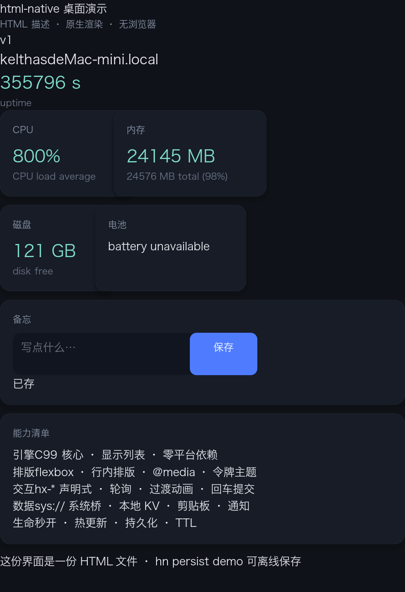
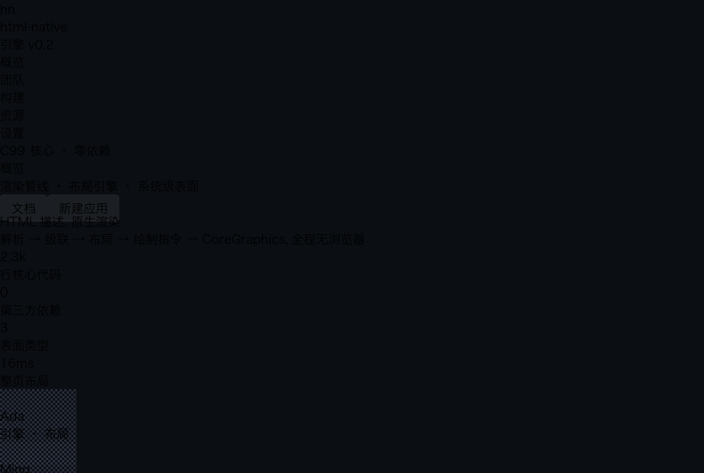
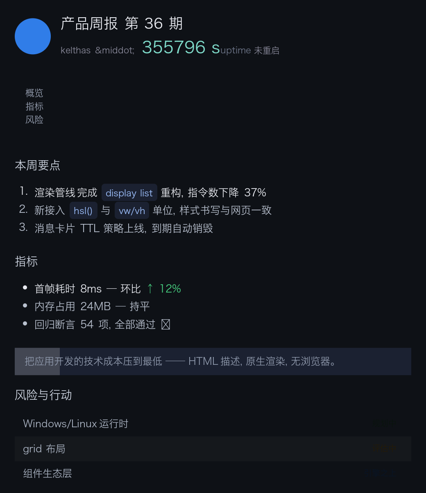
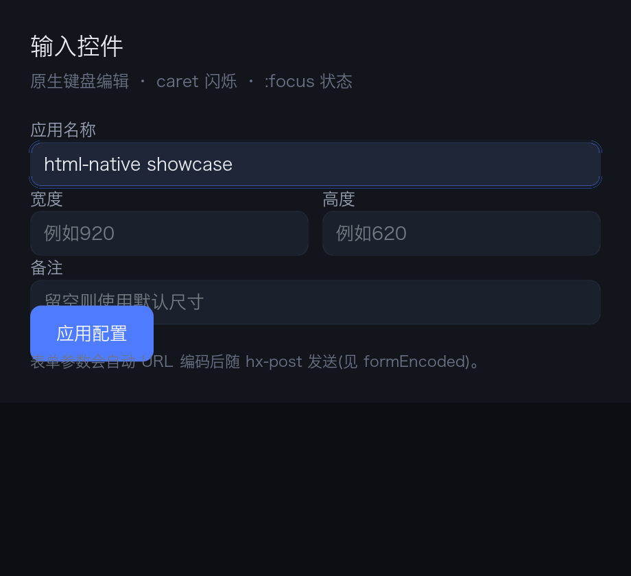
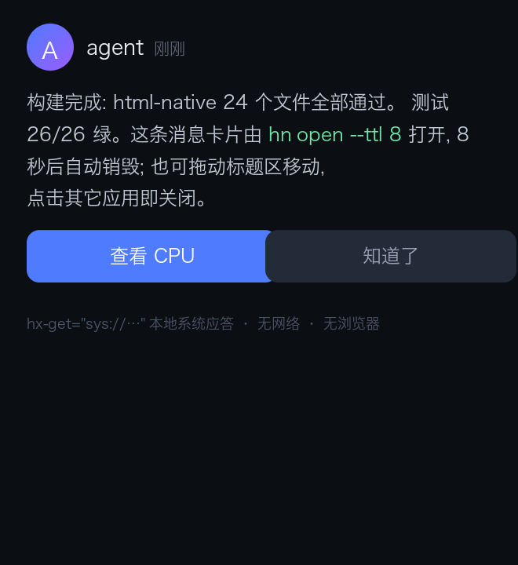
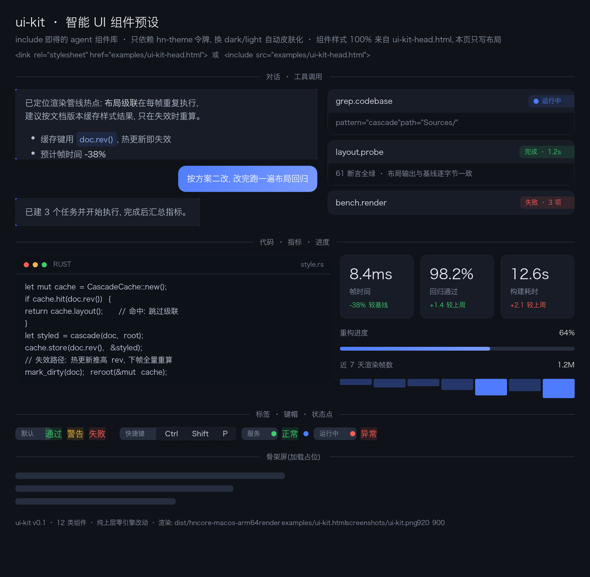

Neb 是给 AI agent 用的原生渲染引擎：agent 产出 HTML/CSS， 引擎把它直接算成像素、开成桌面原生窗。 没有浏览器内核，没有构建链，没有运行时依赖—— 窗口默认无边框，界面就是画布。
hn 窗口默认无标题栏。透明窗的每一像素都是桌面上的一笔。
hn-md / hn-json / hn-csv：工具输出装载即界面。
agent 要把界面送到人眼前，常见两条路都有硬伤：浏览器标签是"网页"不是"应用"； WebView 壳背着几十 MB 内核，启动慢，形态也只是"一个框"。Neb 是第三条： 自研引擎直接把标记算成桌面原生窗。
| 浏览器标签 | WebView 壳 | Neb | |
|---|---|---|---|
| 产物观感 | 网页标签页 | 一个装网页的框 | 无边框原生窗 / 桌宠 / 画上桌面的透明层 |
| 内核体积 | 浏览器本身 | 100MB+ 运行时 | 单二进制 ~1.5MB，零外部依赖 |
| 确定性 | 随浏览器版本漂 | 随系统 WebView 漂 | 跨架构布局逐字节一致（构建门禁） |
| 无头 / CI | 要浏览器自动化 | 要显示环境 | headless 渲染 / 截图 / 事件注入全链路 |
| agent 驱动 | DOM API | DOM API | socket 协议 + 1300+ 探针断言即语言规范 |
hn 的窗口默认没有标题栏、没有系统边框——窗口表面就是内容本身。 形态是一张连续的谱，全部由文档里几行 meta 决定。
打开就是一个干净的矩形画布。hn-frameless="0" 才会要回
系统标题栏——那是例外，不是常态。
hn-transparent="1" 让窗口逐像素透明；配合画刷呈现，
内容像颜料一样铺在你的桌面壁纸上，未画到的地方就是桌面。
无底色 + 悬浮层级 + 跨空间 + 鼠标穿透 + 幽灵模式（不进 Dock）。 立绘、气泡、网格形变摆动——桌面上住着一个小东西。
hn-applet 具名常驻（销毁后回原位）；
.hnapp 胶囊把文档/数据/几何/agent 操作指令装进一个
可携带的 JSON 文件。
一条流水线，两段解耦：引擎把标记算成 14 种绘制指令的纯数据清单； 平台层把清单画到屏幕。画的方式可以换——软件光栅、cairo、GPU 直呈—— 清单不变。
种绘制指令：RECT / TEXT / IMAGE / CLIP / QUAD / POLYGON / MESH / BITMAP / TRIS…——纯数据，可序列化、可 diff、可离屏重放
个可互换光栅后端（同签名换链接即换）：hnsoft 软件光栅（缺省）·
cairo（一份实现喂全平台）· Metal GPU 原语（HN_GPU=metal，
支持直呈 drawable，零 CPU 位图零回读）
个交叉编译目标（macOS arm64/x86_64 · Linux x86_64/aarch64 · Windows x86_64），跨架构布局输出逐字节一致——FMA 融合被显式关掉
圆角与圆的边缘走 4-tap 亚像素抗锯齿（只对边缘像素付费）； 描边环按 CSS border 语义画在盒内带；裁剪边缘按覆盖率混合， 圆形头像的裁边和实心圆一样平滑。
引擎不认识字体、解码器、GPU——文本测量、图片解码、媒体播放、
GPU 原语全部是运行期注入的回调表；每平台一个 hnp_*.c，
运行期 dlopen 系统 API，编译期零 SDK。
按网页习惯书写，不需要迁就引擎；免单位数值、标准选择器、标准颜色照单全收。
block/flex 全套、行内格式化、calc()、
属性选择器、:nth-of-type、
2D/3D 变换（preserve-3d 真立方体、透视消失点）、
@media 响应式、免单位补 px。
transition / @keyframes / spring·bounce·elastic 闭式缓动 / Lottie（含 .lottie 直读）/ GIF 逐帧 disposal / hn-mesh 网格形变 （Live2D motion 驱动）/ 帧率无关按 t 求值。
hn-md（含代码高亮/表格/任务清单）、
hn-json、hn-csv 源文本装载即变 DOM；
截断口径保护巨输出不炸布局——工具输出窗开箱即用。
hx-get/post/trigger 声明式交互；
QuickJS 桥（hnSetText/hnGet2D canvas 2D/
hn.fetch）与 wasm3 纯计算模块；运行时网络层带主机白名单
HN_FETCH_ALLOW，引擎核心依旧零网络。
<video>/<audio> 六态状态机；macOS 走 AVFoundation （运行期 dlopen），真窗视频可走 AVPlayerLayer 原生图层直通—— 像素不过 CPU。无宿主时优雅占位。
sys://cpu|memory|disk|store|clipboard|notify|open
零网络本地应答；hn-theme 一行注入完整令牌基座；
ui-kit 组件预设 include 即得——agent 不写 CSS 也出精致界面。
探针断言（37 个 tools/*_probe.sh）——"支持的子集"不是文档承诺，是可执行规范
WebView / WebKit / Electron / Swift 依赖（otool -L 可验证：只链 FreeType 与系统 libc）
条渲染路径——自研 C99 引擎；历史上"系统 webview 优先"与 Swift 运行时两条路都已删除
真实窗口离屏截图（@2x），非设计稿。






更多形态（桌宠 / Live2D 数字人 / 3D 大屏 / 媒体窗）见仓库 screenshots/ 与 examples/。
会 HTML 和 CSS 就够了。构建链只有 bash + zig cc。
$ ZIG=zig bash tools/build-multiplatform.sh # dist/ 全套三平台产物 $ bash tools/build-daemon-cli.sh # dist/hn-daemon 常驻宿主 + dist/hn CLI
$ dist/hn-daemon & $ dist/hn open myapp app.html --css app.css --window # 桌面弹出原生窗
# 保存文件 ~300ms 内窗口热更新（进程与窗口表面不动） $ dist/hn update myapp app.html # 同 id 推新文档，走同一通道
$ dist/hn dump myapp # 绘制指令数（管线健康） $ dist/hn text myapp --element title # 元素文本 $ dist/hn event myapp --kind click --target btn # 注入事件 $ dist/hn shot myapp out.png # 无头渲染 PNG（视觉回归）
Neb 不是浏览器，也刻意不做浏览器。"支持的子集 + 探针 = 语言规范"； 以下是明说 不做 / 未做 的部分。
目标渲染的是 agent 生成的自定义 hn 子集。服务"渲染真实网页"的特性一律
走 sys://open 桥交给系统浏览器，不塞进引擎。
JS 面是刻意的 小桥（hnSetText / hnGet2D / hn.fetch / hnWasmCall…）， 不是 DOM/WebAPI 兼容层。
媒体解码委托平台框架（macOS AVFoundation）；引擎只认回调解码器契约。 非 FFmpeg 路线。
Live2D .moc3 网格渲染依赖官方 Cubism Core（闭源，按授权自行提取）；
Linux 透明窗需 32 位 visual（路线图）；grid 布局、select 原生控件、
hn new 脚手架在近期路线。